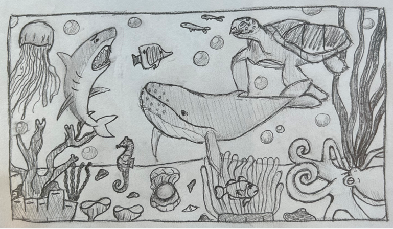
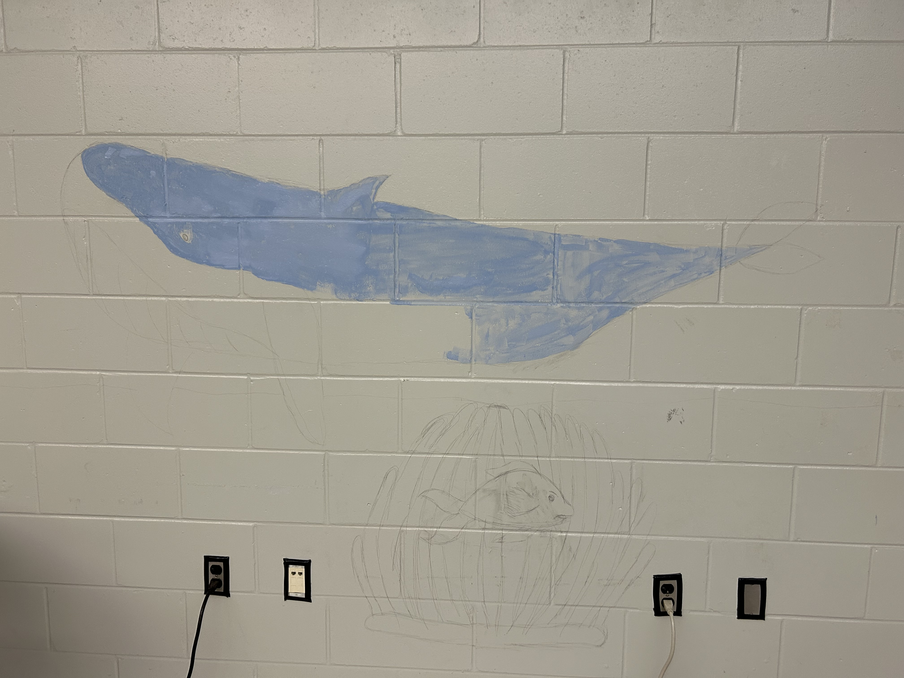
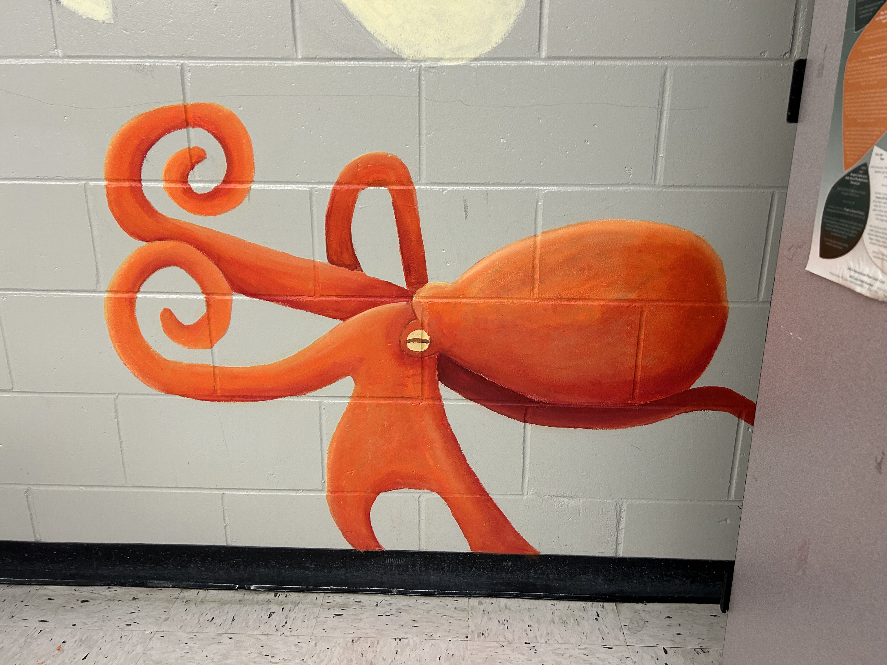
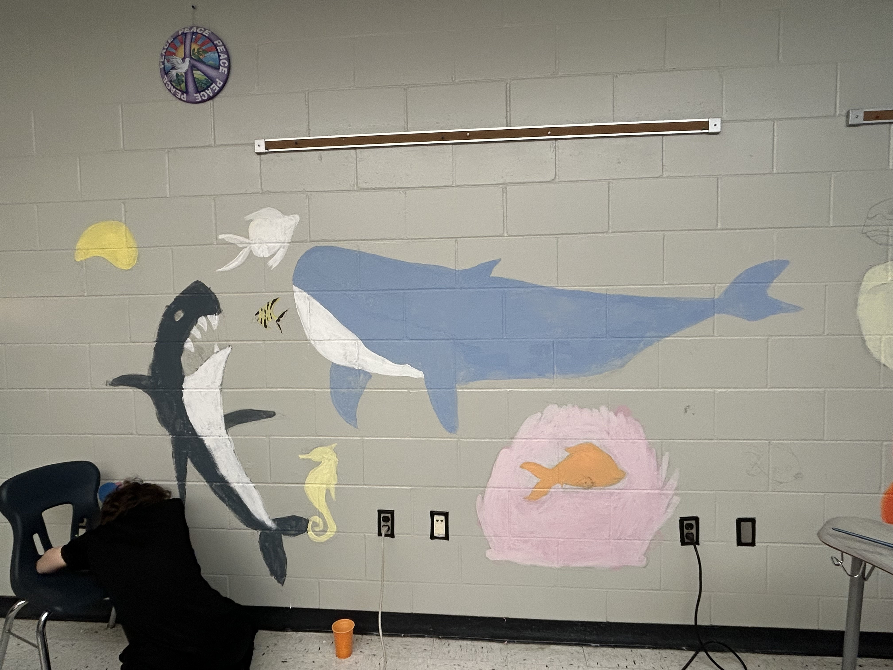
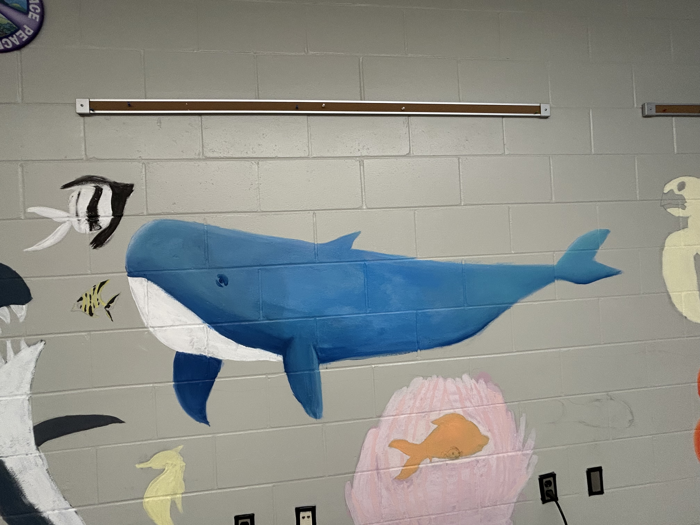
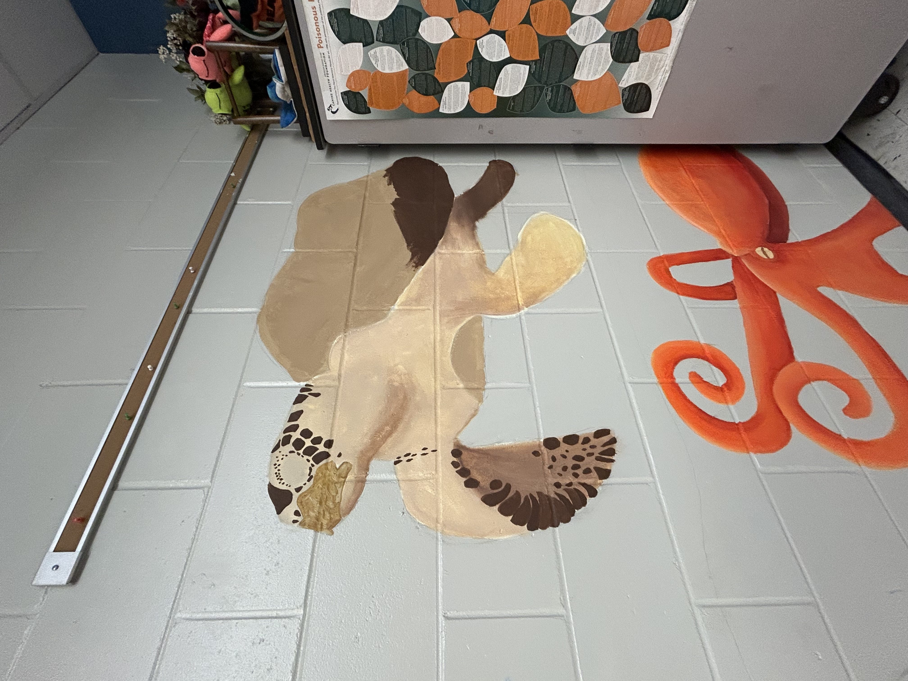
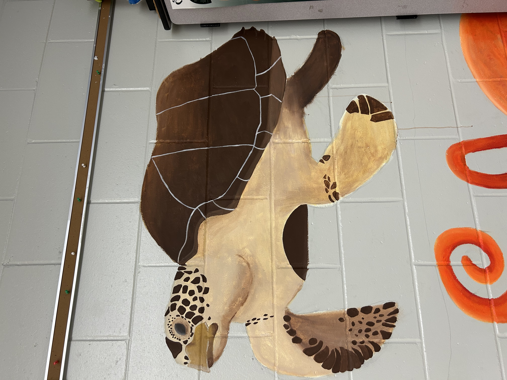
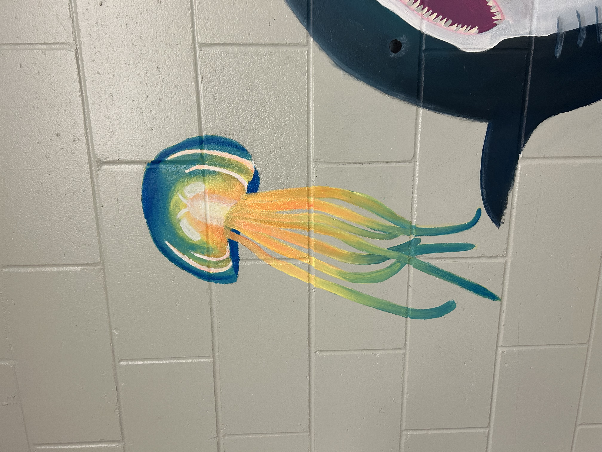
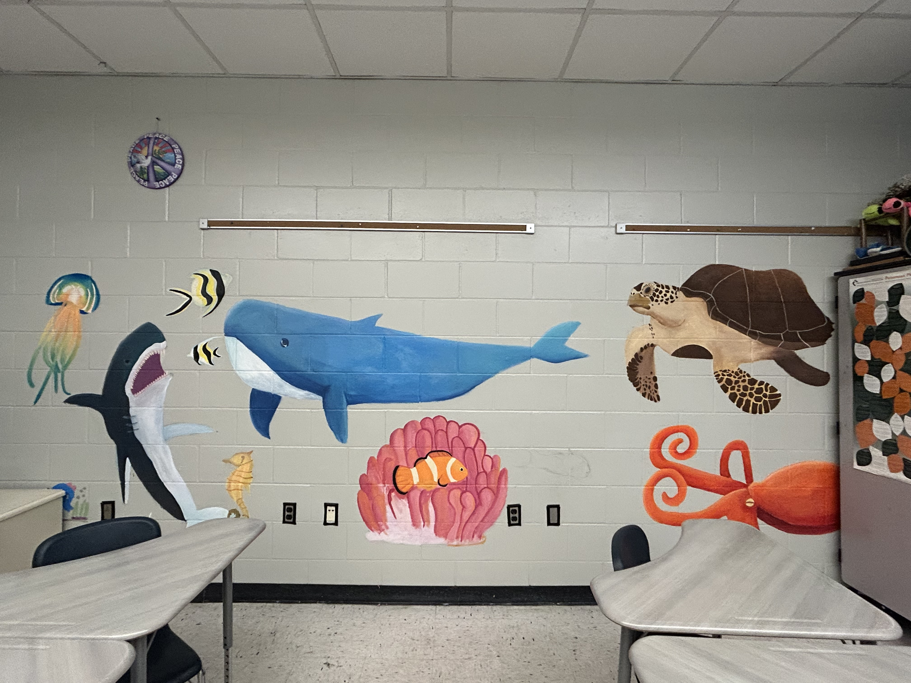

Prompt:
Problem:
Role(s): Concept designer and lead artist



Process:






Reflection:
-Strengthened my collaboration and leadership skills.
-Better at making unified art piece with large team.
-Helped develop my ability to adapt to a changing project.